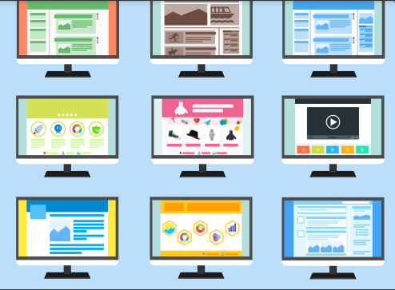

CSS está diseñado principalmente para marcar la separación del contenido del documento y la forma de presentación de este, características tales como las capas o layouts, los colores y las fuentes.4 Esta separación busca mejorar la accesibilidad del documento, proveer más flexibilidad y control en la especificación de características presentacionales, permitir que varios documentos HTML compartan un mismo estilo usando una sola hoja de estilos separada en un archivo .css, y reducir la complejidad y la repetición de código en la estructura del documento La separación del formato y el contenido hace posible presentar el mismo documento marcado en diferentes estilos para diferentes métodos de renderizado, como en pantalla, en impresión, en voz (mediante un navegador de voz o un lector de pantalla), y dispositivos táctiles basados en el sistema Braille. También se puede mostrar una página web de manera diferente dependiendo del tamaño de la pantalla o tipo de dispositivo. Los lectores pueden especificar una hoja de estilos diferente, como una hoja de estilos CSS guardado en su computadora, para sobreescribir la hoja de estilos del diseñador. La especificación CSS describe un esquema prioritario para determinar qué reglas de estilo se aplican si más de una regla coincide para un elemento en particular. Estas reglas son aplicadas con un sistema llamado de cascada, de modo que las prioridades son calculadas y asignadas a las reglas, así que los resultados son predecibles. La especificación CSS es mantenida por el World Wide Web Consortium (W3C). El MIME type text/css está registrado para su uso por CSS descrito en el RFC 2318.5.El W3C proporciona una herramienta de validación de CSS gratuita para los documentos CSS.
Con CSS puedes crear reglas para decirle a tu sitio web cómo quieres mostrar la información y puedes guardar los comandos para elementos de estilo (como fuentes, colores, tamaños, etc.) separados de los que configuran el contenido. A través de esta herramienta puedes crear formatos específicos útiles para comunicar tus ideas y crear experiencias agradables para los usuarios del sitio web. Diferencia entre HTML y CSS HTML es un lenguaje de programación utilizado para dar estructura al contenido de un sitio web. Sus siglas en inglés significan «lenguaje de marcas de hipertexto» (HyperText Markup Language), y hacen referencia al código que define el significado de las instrucciones dadas a una plataforma computacional. Estas instrucciones representan todos los enlaces (o hipertextos) que vinculan los contenidos de un sitio, por lo que HTML es la base de cualquier página web. En este lenguaje es posible incluir toda la información referente al contenido un sitio, así como las imágenes, audios y estilos del mismo; sin embargo, su uso para estas tareas conlleva una mayor complejidad en el código fuente. Para hacer más eficiente el uso de HTML, se han diseñado otros lenguajes computacionales para facilitar la gestión de los datos relacionados con el diseño visual de las plataformas. CSS es uno de los lenguajes más importantes utilizados para ordenar las instrucciones referentes a la apariencia de un sitio y presentar los contenidos de una página de forma atractiva De este modo, HTML se emplea para estructurar el contenido de un sitio, mientras que CSS se usa para estructurar su presentación. Básicamente, si el contenido es el rey, CSS es el segundo al mando. Por eso como propietario de un sitio o como experto en marketing con conocimiento web es conveniente que comprendas algunos aspectos fundamentales.
diseño con Grid
diseño de pagina contenedora
diseño con Formulario
Una mezcla de todo lo que se puede hacer con CSS
Han escrito comentarios